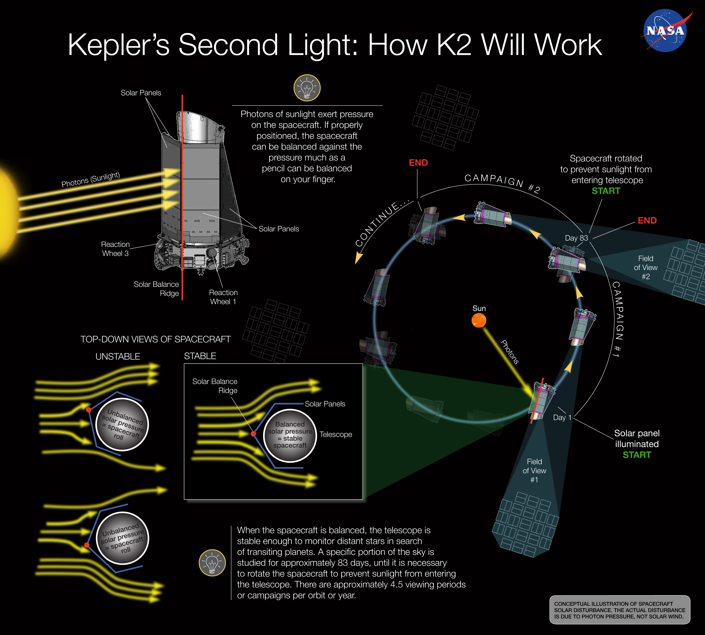
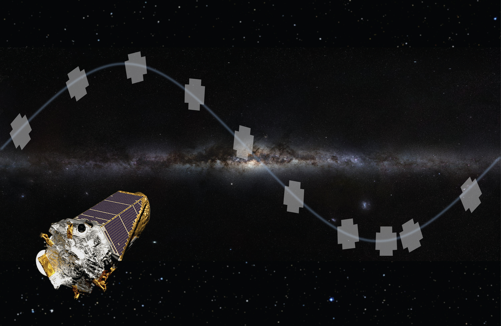
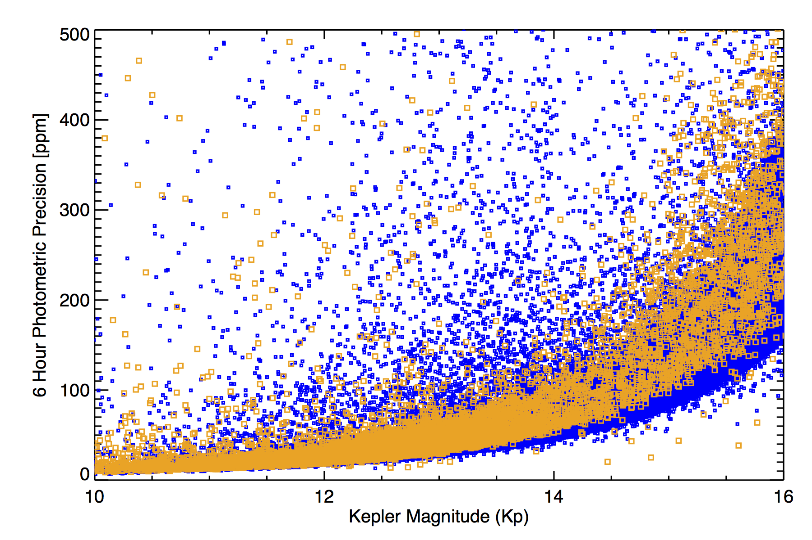

The K2 mission provides the community with an opportunity to continue Kepler’s ground-breaking discoveries in the field of exoplanets and expand its role into new and exciting astrophysical observations. A description of the mission concept and early results can be found in Howell et al. 2014.
Overview
The Kepler spacecraft hosts a 0.95-m aperture Schmidt telescope in an Earth-trailing heliocentric orbit, which insures a thermally stable environment and provides the ability to remain on a single pointing for the duration of each Campaign. Pointing is maintained by a combination of two reaction wheels and thrusters, reacting to motion data provided by fine guidance sensors (fine-point observing) or star trackers (coarse-point observing).
With only two remaining reaction wheels, these operations are only possible while pointing within the orbital plane of the spacecraft, which approximates to the ecliptic. Only this specific family of pointings yields operational configurations where solar pressure is largely mitigated by spacecraft geometry, thereby making viable precision pointing and photometry approaching the quality achieved for the Kepler mission.
Capabilities
Science observations are taken at one of two timing settings: long (30-min) or short (1-min) cadence. When in fine-point observing, K2 is capable of achieving a benchmark photometric precision on an mV = 12 G2V star of better than 170 parts-per-million (ppm) in 30 minutes of integration, i.e., one long cadence exposure. This corresponds to ~30 ppm over a 6.5-hour transit of an Earth-sized body around that star.
While stars brighter than mV = 11.5 will saturate some pixels, K2 performs well on stars as bright as mV = 4, provided the scientific benefit justifies the large number of pixels needed to capture saturated flux bleeding along CCD columns. Kepler also has many faint-target scientific applications where mV = 20 objects yield a photometric precision of 10% over 30 minutes.
The broad photometric bandpass has a half-maximum transmission range of 430 to 840 nm. The instrument has neither changeable filters, dispersing elements, nor a shutter. The detector has a pixel scale of 3.98 arcseconds. Image quality varies with position in the focal plane, with the 95% encircled energy diameter ranging from 3.1 to 7.5 pixels with a median value of 4.2 pixels. The percentage of point-source flux concentrated in the center pixel is between 20% and 62% with a median value of 45%.
Campaigns
K2 observations entail a series of sequential observing "Campaigns" of fields distributed around the ecliptic plane. Each ecliptic Campaign is limited by Sun angle constraints to a duration of approximately 80 days as illustrated in the image below (Howell et al. 2014). Therefore, four to five K2 Campaigns can be performed during each 372-day orbit of the spacecraft.
 Image Credit: NASA Ames/W. Stenzel
K2 is a community-driven mission. All K2 targets are proposed by the community through the Guest Observer program. The K2 mission welcomes all proposals including, but not exclusive to, exoplanet, stellar, extragalactic and solar system science. Since K2 offers a photometric precision approaching that of the original Kepler mission, a variety of scientific goals can be readily achieved with K2's continuous, high-precision photometry of fields that span different parts of the galaxy (as illustrated in the image below).
 Image Credit: NASA Ames/W. Stenzel
Data yield
Constraints imposed by onboard storage and communications dictate that at most 6% of the data from the full focal plane are saved and downloaded. Instead, data for specific, predetermined targets are saved and transmitted as subimages with a typical area of 160 pixels, depending on source brightness. The brighter a target, the more pixels required to capture it. Pixel apertures can be tailored further to accommodate extended or very bright, saturated objects. The Kepler Science Center derives pixel masks for those targets successfully justified by proposers and uploads these targets to the spacecraft before each Campaign.
It is expected that on the order of 10,000 to 20,000 long cadence targets and 50 to 100 short cadence targets will be available per Campaign. The number of observed targets in each Campaign varies based on the density of the field and on how many extended or bright objects are observed. Such objects require larger aperture sizes and decrease the total number of targets available. These targets must be justified carefully.
Data distribution and archival services are performed by the Space Telescope Science Institute’s MAST archive. Final data products available to observers include original and calibrated pixel values and light curves for each individual target (starting in Campaign 3). The calibration corrects for bias level, smear, galactic cosmic rays, flat fielding, dark current, background, and instrument noise. Simple aperture photometry is used to generate long cadence light curves (starting in Campaign 3).
Data is delivered in Flexible Image Transport System (FITS) format. A thorough understanding of the noise sources and systematic errors of K2 is needed by observers in order to generate their own light curves from the original (uncalibrated or calibrated) pixel data or interpret structure found in archived light curves.
There is no exclusive use period associated with any K2 data.
A comprehensive list of data products for K2 is given here.
Photometric performance
The photometric precision is dependent primarily upon motion of the spacecraft boresight on jitter timescales shorter than an exposure length and solar-induced drift timescales longer than an exposure.
Reaction wheel jitter
During engineering tests between Oct-Dec 2013, the spacecraft collected data in a coarse-point mode. The measured Full-Width Half Maximum of the coarse-point K2 Point-Spread Function is a measure of spacecraft jitter and is within 5% of the fine-point Kepler Point-Spread Function across the entire field-of-view.
The figure below provides a fit of the Kepler fine-point Point-Spread Function to a K2 coarse-point target close to the spacecraft boresight. From top-left to bottom-right: a 30 min observation of a 12th magnitude K2 star, the best-fitting Kepler PSF model, the best-fit model binned over detector pixels, and the fit residual. Spacecraft jitter during two-wheel operation is therefore generally only a few percent larger than the three-wheel Kepler mission and is not a major concern for K2 photometric precision.

Solar pressure-induced drift
Low-frequency motion due to solar pressure and subsequent thruster firings cause targets to drift across detector pixels and is the dominant factor in photometric precision after photon statistics. The frequency of reaction wheel momentum resaturations and thruster-controlled pointing tweaks will be tuned to trade photometric precision with pixel mask size and fuel consumption. During the Dec 2013 test, resaturations occurred on a 48-hour cycle and pointing tweaks every 12 hours. Thruster firings kept targets localized to within three pixels across the duration of the 6-day test run. For the purposes of providing a photometric precision measure that can be compared with the Kepler mission, an uncrowded 12th magnitude target is selected for showcasing and its sensitivity to a 6-hour duration planet transit is measured. After defining a pixel mask to contain the 3-pixel focal-plane drift of the target, motion systematics and stellar astrophysics are removed from the subsequently derived Simple Aperture Photometry time series with a 48-hour Savitzky-Golay filter (a standard method to prepare stellar light curves for transit searches). The subsequent median 6-hr photometric precision of a 12th mag target is 87 ppm (94 µmag). This is within a factor of 4 of the fine-point Kepler mission precision for quiet G dwarfs. The blue shaded regions represent times associated with reaction wheel resaturations and engineering tests. The data collected during these intervals were clipped from the time-series.

A major activity during ongoing testing is the measurement of thermal alignment changes between star trackers and boresight throughout a campaign. This calibration will allow more precise pointing control, smaller pixel masks and consequently more targets per Campaign. There remains room for further improvements in photometric precision by optimizing the frequency of pointing resets and acquiring guide stars for fine-guidance tracking. As described in the following section, pointing and guiding optimization has allowed K2 to achieve photometric precisions that rival the Kepler mission.
Fine-point photometric precision
The following plot below demonstrates the fine-point photometric precision achieved by K2 in Campaign 3 (orange) compared to Kepler in Quarter 10 (blue) [credit: Andrew Vanderburg, created using the method described in Vanderburg (2014) and Vanderburg & Johnson (2014)]. Giant stars were excluded from the computation of the combined differential photometric precision (CDPP) to provide a comparison against photometrically-quiet dwarf stars. Note that the data from Campaign 3 was taken after applying an increase in pointing control bandwidth, so data in earlier Campaigns will provide slightly poorer photometric precision.
